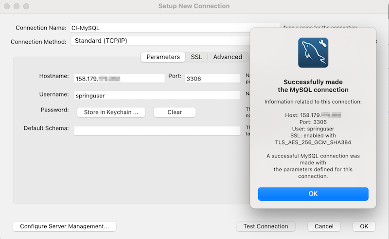
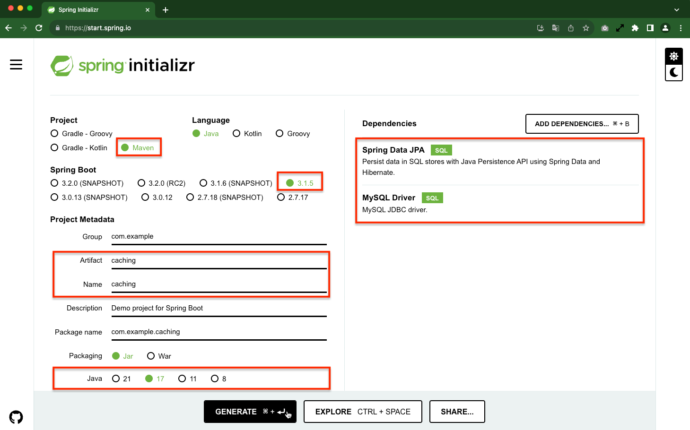
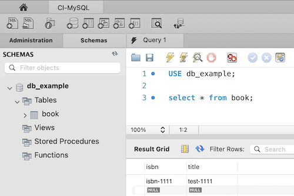

4.1.1.3 Spring Boot에서 OCI Cache with Redis + MySQL 쓰기
사전 준비: 테스트용 MySQL 서버 준비
OCI에서는 MySQL 데이터베이스 서비스를 제공하고 있습니다. 여기서는 간단한 테스트이므로, 간단히 컨테이너 이미지를 실행할 수 있는 OCI Container Instance를 통해 MySQL 서버를 만들도록 하겠습니다.
9.1 Container Instances로 컨테이너 배포하기를 참조하여 배포합니다.
MySQL 컨테이너로 배포하기
-
OCI 콘솔에 로그인합니다.
-
좌측 상단 햄버거 메뉴에서 Developer Services > Containers & Artifacts > Container Instances 로 이동합니다.
-
생성을 위해 Create container instance 버튼을 클릭합니다.
-
기본 생성정보를 입력을 입력합니다.
- Name: 예) mysql
- Networking: 여기서는 편의상, 작업 PC에서 접근하기 위해 Public Subnet을 선택하고, Public IP를 할당합니다.
-
생성할 컨테이너 정보를 입력합니다.
-
Name: 예) mysql
-
Image: External registry 선택
- Registry hostname: docker.io
- Repository: mysql
- Tag: 8.0.35
- Registry credentials type: None
-
Environmental variables: 사용하는 MySQL 컨테이너 이미지에서 제공하는 환경변수 값 중에서 데이터베이스 설치하기 위해 필요한 아래변수들을 추가합니다.
Key Value MYSQL_DATABASE db_example MYSQL_ROOT_PASSWORD ThePassword MYSQL_USER springuser MYSQL_PASSWORD ThePassword -
Show advanced options을 클릭하여 추가적인 고급 설정을 지정
-
Startup Options
-
Command arguments:
--default-authentication-plugin=mysql_native_passwordMySQL 8부터 기본 인증방식이 변경지만, 여기서는 편의상 기존 암호방식을 사용하기 위한 설정으로 컨테이너 시작시 사용할 값으로 추가합니다.
-
-
-
-
입력한 모든 정보를 확인하고 Create 버튼을 클릭하여 Container Instance를 생성합니다.
-
Container Instance가 생성되면 Public IP를 확인합니다.
-
Container Instance가 사용하는 Subnet의 Security List에, 인터넷에서 3306 포트로 접근할 수 Ingress에 미리 등록해야 합니다.
Stateless Source IP Protocol Source Port Range Destination Port Range Description No 0.0.0.0/0 TCP All 3306 MySQL -
MySQL 클라이언트(예, MySQL Workbench)를 통해 연결 테스트를 해봅니다.

Spring Boot에서 MySQL 연동하기
Caching Data with Spring을 참고하여 MySQL, Redis 부분을 추가하였습니다.
Spring Boot 프로젝트 만들기
Spring Initializr를 사용하여 기본 프로젝트 소스파일을 기반으로 개발을 하게 됩니다.
-
Spring Initializr을 통해 프로젝트 파일을 만듭니다.
-
방법 1. Spring Initializr를 사용하여 기본 프로젝트 소스파일을 만듭니다.
- 아래 그림과 같이 프로젝트 정보를 입력하고 Generate를 클릭하여 소스파일을 생성합니다.

-
Book Model 만들기
-
src/main/java/com/example/caching/Book.java파일을 다음과 같이 작성합니다.@Entity: 테이블과 링크될 클래스임을 표시합니다.@Id: 해당 테이블의 Primary Key 임을 표시합니다.
package com.example.caching; import jakarta.persistence.Entity; import jakarta.persistence.Id; @Entity public class Book { @Id private String isbn; private String title; public Book() { } public Book(String isbn, String title) { this.isbn = isbn; this.title = title; } public String getIsbn() { return isbn; } public void setIsbn(String isbn) { this.isbn = isbn; } public String getTitle() { return title; } public void setTitle(String title) { this.title = title; } @Override public String toString() { return "Book{" + "isbn='" + isbn + '\'' + ", title='" + title + '\'' + '}'; } }
Book Repository 만들기
-
src/main/java/com/example/caching/BookRepository.java파일을 다음과 같이 작성합니다.JpaRepository인터페이스를 상속받으면, JPA 관련 메서드를 사용할 수 있습니다.
package com.example.caching; import org.springframework.data.jpa.repository.JpaRepository; import org.springframework.stereotype.Repository; public interface BookRepository extends JpaRepository<Book, String> { }
JPA, MySQL 사용을 위한 설정 추가하기
-
dependency에 redis를 추가합니다.
- Maven 기준 pom.xml에 다음이 있는지 확인합니다. 없으면 추가합니다.
<dependency> <groupId>org.springframework.boot</groupId> <artifactId>spring-boot-starter-data-jpa</artifactId> </dependency> <dependency> <groupId>com.mysql</groupId> <artifactId>mysql-connector-j</artifactId> <scope>runtime</scope> </dependency> -
src/main/application.properties파일을 생성하고 다음 항목을 추가합니다.- xxx.xxx.xxx.xxx는 MySQL 서버 Container Instance의 Public IP로 대체합니다.
spring.jpa.hibernate.ddl-auto=update spring.datasource.url=jdbc:mysql://${MYSQL_HOST:xxx.xxx.xxx.xxx}:3306/db_example spring.datasource.username=springuser spring.datasource.password=ThePassword spring.datasource.driver-class-name=com.mysql.cj.jdbc.Driver #spring.jpa.show-sql: true
Book Service 만들기
-
src/main/java/com/example/caching/BookService.java파일을 다음과 같이 작성합니다.- Book Repository에서 사용할 CRUD 메서드를 만듭니다.
package com.example.caching; import org.springframework.stereotype.Service; import org.springframework.beans.factory.annotation.Autowired; import java.util.Optional; @Service public class BookService { @Autowired BookRepository bookRepository; public Book createBook(Book book) { return bookRepository.save(book); } public Book getByIsbn(String isbn) throws Exception { Optional<Book> opt = bookRepository.findById(isbn); return opt.orElseThrow(() -> new Exception("Book Not Found")); } public Book updateBook(String isbn, Book book) throws Exception { bookRepository.findById(isbn).orElseThrow(() -> new Exception("Book Not Found")); return bookRepository.save(book); } public void deleteBook(String isbn) throws Exception { Book book = bookRepository.findById(isbn).orElseThrow(() -> new Exception("Book Not Found")); bookRepository.delete(book); } }
테스트 구성
-
실행시
src/main/java/com/example/caching/AppRunner.java파일을 다음과 같이 작성합니다.- 데이블에 데이터를 생성, 조회하는 것을 확인하는 예시입니다.
package com.example.caching; import org.slf4j.Logger; import org.slf4j.LoggerFactory; import org.springframework.boot.CommandLineRunner; import org.springframework.stereotype.Component; @Component public class AppRunner implements CommandLineRunner { private static final Logger logger = LoggerFactory.getLogger(AppRunner.class); private final BookService bookService; public AppRunner(BookService bookService) { this.bookService = bookService; } @Override public void run(String... args) throws Exception { // Create logger.info("isbn-1111 -->" + bookService.createBook(new Book("isbn-1111", "test-1111"))); logger.info(".... Fetching books"); logger.info("isbn-1111 --> "); logger.info("isbn-1111 --> " + bookService.getByIsbn("isbn-1111")); } }
테스트 하기
-
캐쉬된 데이터를 삭제합니다.
redis-cli --tls -h localhost localhost:6379> flushall OK localhost:6379> keys * (empty array) localhost:6379> -
소스를 빌드하고 실행합니다.
./mvnw clean package -Dmaven.test.skip java -jar target/caching-0.0.1-SNAPSHOT.jar -
isbn-1111이 DB에 입력되고, 다시 조회가 오류없이 실행되었습니다.
2023-11-16T20:03:44.867+09:00 INFO 54451 --- [ main] com.example.caching.AppRunner : isbn-1111 -->Book{isbn='isbn-1111', title='test-1111'} 2023-11-16T20:03:44.867+09:00 INFO 54451 --- [ main] com.example.caching.AppRunner : .... Fetching books 2023-11-16T20:03:45.117+09:00 INFO 54451 --- [ main] com.example.caching.AppRunner : isbn-1111 -->Book{isbn='isbn-1111', title='test-1111'} 2023-11-16T20:03:45.121+09:00 INFO 54451 --- [ionShutdownHook] j.LocalContainerEntityManagerFactoryBean : Closing JPA EntityManagerFactory for persistence unit 'default' -
MySQL Workbench를 통해 접속해서 실제 테이블이 생성된 것과 데이터를 확인합니다. 데이터가 잘 입력된 것을 볼 수 있습니다.

OCI Cache with Redis를 캐쉬 서버로 연동하기
Redis 관련 설정 추가하기
공통사항으로 10.1.2 Spring Boot에서 OCI Cache with Redis로 데이터 캐쉬하기과 동일한 내용이며, 추가적으로 캐쉬된 데이터의 Time To Live(TTL) 설정이 추가합니다.
-
dependency에 redis를 추가합니다.
- Maven 기준 pom.xml에 다음 추가
<dependency> <groupId>org.springframework.boot</groupId> <artifactId>spring-boot-starter-data-redis</artifactId> </dependency> -
src/main/application.properties파일을 생성하고 다음 항목을 추가합니다.- 아래 host, port는 개발환경을 기준으로 앞선 실습에서의 Bastion 서비스를 통해 포트포워딩으로 연동하는 예시입니다.
spring.redis.host=localhost spring.redis.port=6379 spring.redis.ssl=true -
Redis 설정을 위한 Config 클래스 파일(
src/main/java/com/example/caching/RedisConfig.java)을 만듭니다.- lettuce 라이브러리를 사용하는 예시입니다.
-
redis-cli에서
--tls옵션을 사용한 것 처럼lettuceClientConfigurationBuilder.useSsl().disablePeerVerification()을 꼭 추가합니다. -
application.properties에 값을 사용하여 host, port 값과 ssl 설정여부 설정하는 예시입니다.
-
MySQL 테이블이 원 데이터이고 Redis는 캐쉬이므로, 여기서는 TTL설정이 필요하고 예시에서는 1시간으로 설정하였습니다.
RedisCacheConfiguration.defaultCacheConfig().entryTtl(Duration.ofHours(1L));
-
package com.example.caching; import org.springframework.context.annotation.Configuration; import org.springframework.context.annotation.Bean; import org.springframework.beans.factory.annotation.Value; import org.springframework.data.redis.connection.RedisConnectionFactory; import org.springframework.data.redis.connection.RedisStandaloneConfiguration; import org.springframework.data.redis.connection.lettuce.LettuceConnectionFactory; import org.springframework.data.redis.connection.lettuce.LettuceClientConfiguration; import org.springframework.data.redis.connection.RedisNode; import java.time.Duration; import org.springframework.data.redis.cache.RedisCacheConfiguration; @Configuration public class RedisConfig { @Value("${spring.redis.host}") private String host; @Value("${spring.redis.port}") private int port; @Value("${spring.redis.ssl}") private boolean ssl; @Bean public RedisConnectionFactory redisConnectionFactory() { final RedisNode redisNode = RedisNode.newRedisNode() .listeningAt(host, port) .build(); // Connecting as a Standalone Redis server final RedisStandaloneConfiguration redisStandaloneConfiguration = new RedisStandaloneConfiguration(); redisStandaloneConfiguration.setHostName(host); redisStandaloneConfiguration.setPort(port); final LettuceClientConfiguration.LettuceClientConfigurationBuilder lettuceClientConfigurationBuilder = LettuceClientConfiguration.builder(); if (ssl) { lettuceClientConfigurationBuilder.useSsl().disablePeerVerification(); } final LettuceClientConfiguration lettuceClientConfiguration = lettuceClientConfigurationBuilder.build(); return new LettuceConnectionFactory(redisStandaloneConfiguration, lettuceClientConfiguration); } @Bean public RedisCacheConfiguration defaultRedisCacheConfiguration() { return RedisCacheConfiguration.defaultCacheConfig() .disableCachingNullValues() .entryTtl(Duration.ofHours(1L)); } } - lettuce 라이브러리를 사용하는 예시입니다.
캐쉬설정
-
src/main/java/com/example/caching/CachingApplication.java에@EnableCachingannotation을 추가합니다.package com.example.caching; import org.springframework.boot.SpringApplication; import org.springframework.boot.autoconfigure.SpringBootApplication; import org.springframework.cache.annotation.EnableCaching; @SpringBootApplication @EnableCaching public class CachingApplication { public static void main(String[] args) { SpringApplication.run(CachingApplication.class, args); } } -
캐쉬되는 데이터 모델(
src/main/java/com/example/caching/Book.java)을Serializable하도록 설정합니다.package com.example.caching; ... import java.io.Serializable; @Entity public class Book implements Serializable { ... } -
src/main/java/com/example/caching/BookService.java에 캐쉬를 사용할 함수에 각각@Cacheable,@CachePut,@CacheEvictannotation을 추가하여, 각 메서드 호출시 캐쉬에 데이터 입력, 갱신, 삭제하도록 설정합니다.package com.example.caching; import org.springframework.stereotype.Service; import org.springframework.beans.factory.annotation.Autowired; import java.util.Optional; import org.springframework.cache.annotation.Cacheable; import org.springframework.cache.annotation.CachePut; import org.springframework.cache.annotation.CacheEvict; @Service public class BookService { @Autowired BookRepository bookRepository; public Book createBook(Book book) { return bookRepository.save(book); } @Cacheable(value = "books", key = "#isbn") public Book getByIsbn(String isbn) throws Exception { Optional<Book> opt = bookRepository.findById(isbn); return opt.orElseThrow(() -> new Exception("Book Not Found")); } @CachePut(value = "books", key = "#isbn") public Book updateBook(String isbn, Book book) throws Exception { bookRepository.findById(isbn).orElseThrow(() -> new Exception("Book Not Found")); return bookRepository.save(book); } @CacheEvict(value = "books", key = "#isbn") public void deleteBook(String isbn) throws Exception { Book book = bookRepository.findById(isbn).orElseThrow(() -> new Exception("Book Not Found")); bookRepository.delete(book); } }
테스트 구성
-
실행시
src/main/java/com/example/caching/AppRunner.java파일을 다음과 같이 작성합니다.- 캐쉬가 초기화된 상태에서 Cache Miss, Cache Hit를 테스트하는 예시입니다.
package com.example.caching; import org.slf4j.Logger; import org.slf4j.LoggerFactory; import org.springframework.boot.CommandLineRunner; import org.springframework.stereotype.Component; @Component public class AppRunner implements CommandLineRunner { private static final Logger logger = LoggerFactory.getLogger(AppRunner.class); private final BookService bookService; public AppRunner(BookService bookService) { this.bookService = bookService; } @Override public void run(String... args) throws Exception { // Create //logger.info("isbn-1111 -->" + bookService.createBook(new Book("isbn-1111", "test-1111"))); logger.info(".... Fetching books"); logger.info("isbn-1111 --> "); logger.info("isbn-1111 --> " + bookService.getByIsbn("isbn-1111")); logger.info("isbn-1111 --> "); logger.info("isbn-1111 --> " + bookService.getByIsbn("isbn-1111")); } } -
테스트 로그 확인을 위해
src/main/application.properties파일에 다음 항목을 추가합니다.logging.level.org.springframework.cache=TRACE spring.jpa.properties.hibernate.show_sql=true logging.level.org.hibernate.type=trace
테스트 하기
-
MySQL에는
isbn-1111이 book 테이블에 있는 상태입니다. -
캐쉬된 데이터를 삭제합니다.
redis-cli --tls -h localhost localhost:6379> keys * 1) "books::isbn-1111" localhost:6379> flushall OK localhost:6379> keys * (empty array) localhost:6379> -
소스를 빌드하고 실행합니다.
./mvnw clean package -Dmaven.test.skip java -jar target/caching-0.0.1-SNAPSHOT.jar -
실행 로그 확인
-
첫번째 Isbn-1111 조회:
2023-11-19T15:19:28.675+09:00 TRACE 9173 --- [ main] o.s.cache.interceptor.CacheInterceptor : No cache entry for key 'isbn-1111' in cache(s) [books]와 같이 Cache Miss가 되고, 캐쉬되었습니다.- 이후 DB에서 조회해 오는 것을 볼수 있습니다.
Hibernate: select b1_0.isbn,b1_0.title from book b1_0 where b1_0.isbn=?
-
두번째 Isbn-1111 조회:
2023-11-19T15:19:29.057+09:00 TRACE 9173 --- [ main] o.s.cache.interceptor.CacheInterceptor : Cache entry for key 'isbn-1111' found in cache 'books'와 같이 Cache Hit 되어, 캐쉬에 있는 데이터를 사용했습니다.
2023-11-19T15:19:28.230+09:00 INFO 9173 --- [ main] com.example.caching.AppRunner : .... Fetching books 2023-11-19T15:19:28.230+09:00 INFO 9173 --- [ main] com.example.caching.AppRunner : isbn-1111 --> 2023-11-19T15:19:28.242+09:00 TRACE 9173 --- [ main] o.s.cache.interceptor.CacheInterceptor : Computed cache key 'isbn-1111' for operation Builder[public com.example.caching.Book com.example.caching.BookService.getByIsbn(java.lang.String) throws java.lang.Exception] caches=[books] | key='#isbn' | keyGenerator='' | cacheManager='' | cacheResolver='' | condition='' | unless='' | sync='false' 2023-11-19T15:19:28.675+09:00 TRACE 9173 --- [ main] o.s.cache.interceptor.CacheInterceptor : No cache entry for key 'isbn-1111' in cache(s) [books] 2023-11-19T15:19:28.675+09:00 TRACE 9173 --- [ main] o.s.cache.interceptor.CacheInterceptor : Computed cache key 'isbn-1111' for operation Builder[public com.example.caching.Book com.example.caching.BookService.getByIsbn(java.lang.String) throws java.lang.Exception] caches=[books] | key='#isbn' | keyGenerator='' | cacheManager='' | cacheResolver='' | condition='' | unless='' | sync='false' Hibernate: select b1_0.isbn,b1_0.title from book b1_0 where b1_0.isbn=? 2023-11-19T15:19:29.013+09:00 INFO 9173 --- [ main] com.example.caching.AppRunner : isbn-1111 --> Book{isbn='isbn-1111', title='test-1111'} 2023-11-19T15:19:29.013+09:00 INFO 9173 --- [ main] com.example.caching.AppRunner : isbn-1111 --> 2023-11-19T15:19:29.013+09:00 TRACE 9173 --- [ main] o.s.cache.interceptor.CacheInterceptor : Computed cache key 'isbn-1111' for operation Builder[public com.example.caching.Book com.example.caching.BookService.getByIsbn(java.lang.String) throws java.lang.Exception] caches=[books] | key='#isbn' | keyGenerator='' | cacheManager='' | cacheResolver='' | condition='' | unless='' | sync='false' 2023-11-19T15:19:29.057+09:00 TRACE 9173 --- [ main] o.s.cache.interceptor.CacheInterceptor : Cache entry for key 'isbn-1111' found in cache 'books' 2023-11-19T15:19:29.057+09:00 INFO 9173 --- [ main] com.example.caching.AppRunner : isbn-1111 --> Book{isbn='isbn-1111', title='test-1111'} -
-
redis-cli로 조회하면, 비어있던 캐쉬가, Cache Miss 후 DB에서 조회되고, 그 결과가 캐쉬된 걸 볼수 있습니다. 또한 추가 설정한 TTL 설정이 적용된 것을 볼 수 있습니다.
localhost:6379> keys * 1) "books::isbn-1111" localhost:6379> ttl books::isbn-1111 (integer) 3274
참고
이 글은 개인으로서, 개인의 시간을 할애하여 작성된 글입니다. 글의 내용에 오류가 있을 수 있으며, 글 속의 의견은 개인적인 의견입니다.